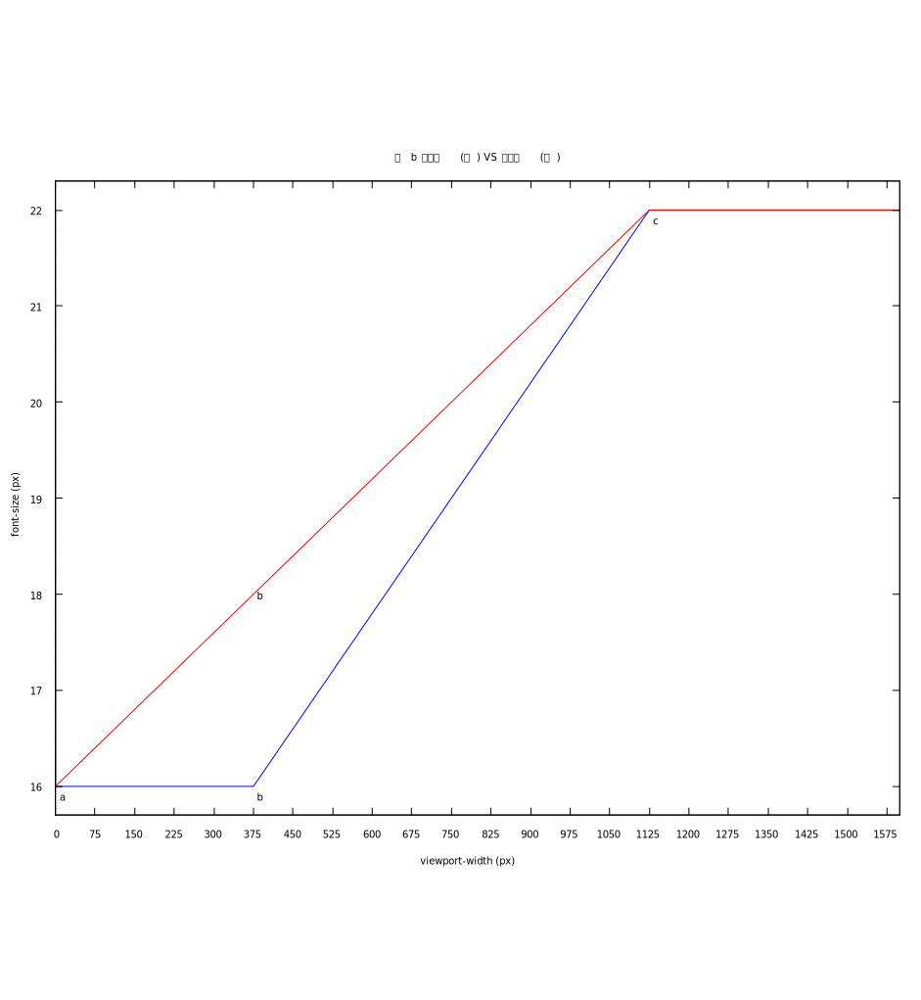

流体排版
Table of Contents
这篇笔记是 2022 年学习响应式布局时写的, 今天清理老电脑的硬盘时翻到了, 看着完整度挺高, 于是修补一下发布出来了.
1. 流体字体计算的公式推导
流体字体排版(fluid typography)是指排版值(typographic values, 包括字体大小, 行高, 字符间距等等)随着视口大小(通常是视口宽度)变化而发生线性变化.
它可以让字体看上去更加"响应式", 而不是像阶梯函数(step function)那样跳跃式变化,
当然这种"技术"也能用在字体以外的地方上, 不过它们已经有更好的解决方案来实现同样的效果, 所以只关注字体就好.
在响应式布局中, 字体的响应式工作应该是最为复杂的, 因为需要很多注意的地方实在太多, 这篇笔记会尽量把这一切都说清楚.
由于和视口大小有着密不可分的关系, 因此, 请确保开发时在页面写入了以下
meta-tag把视口宽度调成设备屏幕的逻辑像素宽度:<meta name="viewport" content="width=device-width, initial-scale=1.0">比如说, 有一个物理像素为
750px宽的高清屏, 它的设备像素比(device pixels ratio, dpr)为 2, 那么此时device-width就为375px.另外, 在与设计师沟通时, 要确认设计稿是否为高清屏所设计, 如果是的话清把设计稿的尺寸除以屏幕的设备像素比来得到逻辑像素, 并以逻辑像素作为计算对象.
这是最为简单的流体字体排版计算的模板(移动端优先):
/* 100vw < xa */ .fluid { font-size: [ya]; } /* 100vw ≥ xa */ @media screen and (min-width: [xa]) { .fluid { font-size: calc([ya] + (100vw - [xa]) * (([yb] - [ya]) / ([xb] - [xa]))); } } /* 100vw ≥ xb */ @media screen and (min-width: [xb]) { .fluid { font-size: [yb]; } }
该计算过程是通过代入线性插值公式 \(y = y_{a} + \frac{(x - x_{a}) (y_{b} - y_{a})}{x_{b} - x_{a}}\) 得出来的.
需要注意的是, 由于
calc不支持纲量(带单位的量)之间的乘法以及除法,所以
(([yb] - [ya]) / ([xb] - [xa]))这一段需要去掉它们的单位, 具体可以参考后面的例子.
其中 \(y\) 是在当前的视口宽度下的字体大小;
而 \(x\) 是当前的视口宽度, 也就是 \(100\mathrm{vw}\), 虽然写的是固定值, 但它代表着浏览器视口当前的像素大小, 所以 \(100\mathrm{vw}\) 本质上是变量;
\(x_{a}\) 和 \(x_{b}\) 为视口尺寸断点;
\(y_{a}\) 是在视口宽度 \(x_{a}\) 下所对应的字体大小, \(y_{b}\) 则是在视口宽度 \(x_{b}\) 下所对应的字体大小;
这就是在 \(x_{a}\) 和 \(x_{b}\) 两个断点(breakpoints)之间的字体大小计算.
在不同情况下断点的数量是不一样的, 每两个相邻的断点之间的字体变化是不一样的,
也就是说假设有 \(a\), \(b\) 和 \(c\) 三个断点, 那么应该有两个计算过程: \(f_{[a, b]}(x)\) 和 \(f_{[b, c]}(x)\), 这两个计算过程的推导方式都是一样的.
这里肯定的是 \(f_{[a, b]}\) 和 \(f_{[b, c]}\) 的函数图像是不能在断点 \(b\) 上连接形成一条直线的,
也就是说 \(f_{[a, b]}\) 不能用在断点 \(b\) 和 \(c\) 之间的字体大小计算上, 反之亦然.
因为如果成立的话, 断点 \(b\) 就没有存在的必要, 到时候 \(f_{[a, b]}\) 和 \(f_{[b, c]}\) 会在 \(b\) 处连接形成一个函数 \(f_{[a, c]}\),
并且该函数在 \(b\) 上可微.

Figure 1: b 可微以及不可微
另外, 有的开发者是通过斜截式 \(y = kx + c\) 得出字体大小的计算过程, 看上去与线性插值的显得不一样, 但两者实则相等的.
把插值公式变为斜截式很简单: \(y = y_{a} + \frac{(x - x_{a})(y_{b} - y_{a})}{x_{b} - x_{a}} = \frac{y_{b} - y_{a}}{x_{b} - x_{a}} \times x + y_{a} - \frac{y_{b} - y_{a}}{x_{b} - x_{a}} \times x_{a}\), 其中 \(\begin{equation*} \left\{ \begin{aligned} k &= \frac{y_{b} - y_{a}}{x_{b} - x_{a}} \\ c &= y_{a} - k \times x_{a} \end{aligned} \right. \end{equation*}\).
换而言之, 斜截式就是对插值式简化后的结果, 下面这个例子可以很好的支持该观点,
/* 100vw < 375px */ .fluid { font-size: 16px; } /* 100vw ≥ 375px */ @media screen and (min-width: 375px) { .fluid { font-size: calc(16px + (100vw - 375px) * ((22 - 16) / (1125 - 375))); } } /* 100vw ≥ 1125px */ @media screen and (min-width: 1125px) { .fluid { font-size: 22px; } }
化简为斜截式, 代入可得 \(\begin{equation*} \left\{ \begin{aligned} k &= \frac{22\mathrm{px} - 16\mathrm{px}}{1125\mathrm{px} - 375\mathrm{px}} = 0.008 \\ c &= 16\mathrm{px} - 0.008 \times 375\mathrm{px} = 13\mathrm{px} \end{aligned} \right. \end{equation*}\), 已知 \(x\) 代表当前视口宽度, 所以 \(x = 100\mathrm{vw}\),
最后可得: \(y = kx + c = 100k \times 1\mathrm{vw} + c = (0.008 \times 100)\mathrm{vw} + 13\mathrm{px} = 0.8\mathrm{vw} + 13\mathrm{px}\).
/* 100vw < 375px */ .fluid { font-size: 16px; } /* 100vw ≥ 375px */ @media screen and (min-width: 375px) { .fluid { font-size: calc(0.8vw + 13px); } } /* 100vw ≥ 1125px */ @media screen and (min-width: 1125px) { .fluid { font-size: 22px; } }
如果目标浏览器支持较新的 css 函数: clamp, 还可以对上面样式进行一步简化:
.fluid { font-size: clamp(16px, calc(0.8vw + 13px), 22px); }
这个方法我也是从其它地方看到的, 然而并没有详细说明, 为此需要验证一番:
\(\text{clamp(}y_{a}, y, y_{b}\text{)}\) 会把 \(y = kx + c\) 限制在 \(y_{a}\) 和 \(y_{b}\) 之间.
当 \(y = kx + c = 100k \times 1\mathrm{vw} + y_{a} - k \times x_{a} \lt y_{a}\) 时, 可以得出 \(1\mathrm{vw} \lt (\frac{k \times x_{a}}{100k} = \frac{x_{a}}{100})\), 也就是 \(100\mathrm{vw} \lt x_{a}\), 同时 \(y\) 被限制为 \(y_{a}\);
当 \(y = kx + c = 100k \times 1\mathrm{vw} + y_{a} - k \times x_{a} \gt y_{b}\) 时, 可以得出 \(1\mathrm{vw} \gt \frac{x_{b}}{100}\), 也就是 \(100\mathrm{vw} \gt x_{b}\), 同时 \(y\) 被限制为 \(y_{b}\);
\(1\mathrm{vw} \gt \frac{x_{b}}{100k}\) 这个关系不容易看出来, 它的计算过程如下:
\(y = kx + c = 100k \times 1\mathrm{vw} + y_{a} - k \times x_{a} \gt y_{b} \rightarrow 1\mathrm{vw} \gt \frac{y_{b} - y_{a} + k \times x_{a}}{100k}\)
令分子 \(y_{b} - y_{a} + k \times x_{a} = z\),
\(\begin{equation*} \begin{aligned} z &= y_{b} - y_{a} + k \times x_{a} \\ &= y_{b} - y_{a} + \frac{y_{b} - y_{a}}{x_{b} - x_{a}} \times x_{a} \\ &= \frac{(y_{b} - y_{a})(x_{b} - x_{a})}{x_{b} - x_{a}} + \frac{y_{b} - y_{a}}{x_{b} - x_{a}} \times x_{a} \\ &= \frac{(x_{b} - x_{a} + x_{a})(y_{b} - y_{a})}{x_{b} - x_{a}} \\ &= \frac{x_{b}(y_{b} - y_{a})}{x_{b} - x_{a}} \end{aligned} \end{equation*}\)
所以, \(1\mathrm{vw} \gt (\frac{z}{100k} = \frac{x_{b}(y_{b} - y_{a})}{x_{b} - x_{a}} \times \frac{x_{b} - x_{a}}{y_{b} - y_{a}} \times \frac{1}{100} = \frac{x_{b}}{100})\).
这就说明简化前后的 CSS 模板是等价的.
把数据代入可以得到结论: 当 \(100\mathrm{vw} \lt 375\mathrm{px}\) 时, \(y\) 被限制在 \(16\mathrm{px}\); 当 \(100\mathrm{vw} \gt 1125\mathrm{px}\) 时, \(y\) 被限制在 \(22\mathrm{px}\).
2. 相对单位的使用
现实中为了可访问性, 一般开发人员都会使用相对单位设定大小, 媒体查询的条件自然也不例外, 其中 rem 用的比较多.
这样就延伸出一个问题: 如果在媒体查询里面又设置了 html 的 font-size, 那么媒体查询条件中的大小应该如何计算?
html { font-size: 0.875rem; } @media (min-width: 23.4375rem) { html { font-size: 1.125rem; } }
根据 W3C 文档, 媒体查询的条件里面使用相对单位, 那是一定按初始 font-size 进行计算.
初始的 font-size 就是默认的 font-size, 假设为 16px, 那么 23.4375rem 等于 23.4375 * 16px = 375px.
在根元素 html 使用相对单位设置 font-size 时也遵守同样规则, 所以 0.875rem 等于 0.875 * 16px = 14px 以及 1.125rem * 16px = 18px.
3. 对于流式字体和响应式布局的一些误解
在视口单位 vw 普及以前, 大家都喜欢使用 rem 响应式布局的方案来实现页面的响应式.
rem 响应式的原理是把视口大小 \(w\) (单位 px)划分成 \(n\) 等份, 再把这个大小 \(\frac{w}{n}\) 作为根元素的 font-size;
在布局时使用 rem 单位, 这样不管视口大小 \(w\) 如何改变, 只要能够及时更新根元素的 font-size, 那么元素和视口之间就总是能够保持同一个比例进行缩放.
比如说, 拿到了宽度为 \(x_d\) (单位 px) 的设计稿, 有个元素的宽度为 \(x_e\) (单位 px), 把设计稿划分成 \(n\) 等份: \(\frac{x_d}{n}\), 并作为根元素的字体大小,
以 rem 单位进行布局就是以根元素字体大小作为计算单位, 那么这个元素的宽度就为: \(x_e \div \frac{x_d}{n}\) (单位 rem ), 元素的高度,字体大小等也是以同样方法进行计算.
如果 \(n = 100\), 那么 1rem 就相当于 1vw, 也就是为什么 vw 出来后 rem 响应式布局方案基本上就是作为兼容方案了.
这里提及 rem 响应式布局, 是因为身边有相当一部分人把它和流式字体排版搞混, 认为可以利用流式字体实现 rem 响应式布局.
因为有时候流式字体也会设置根元素的 font-size, 所以两者看上去好像是一样的, 但细看的话很快会发现不同.
rem 响应式布局的目的是 让元素和视口之间始终保持一个固定比例, 实现该目的的重点是要有一个始终能和视口形成固定比例的参考,
这个参考就是根元素 font-size, font-size 和视口大小之间的比例永远是 \(\frac{w}{n} \div w = \frac{1}{n}\).
流式字体排版是为了让字体在切换断点时变化不突兀, 在流式字体排版的使用场合中, 字体和视口之间通常是不需要保持一定比例的, 因此这种字体的大小不能作为根元素的字体大小.
这里其实还有一个误会: 响应式布局就是对页面进行等比缩放. 相当多的前端开发人员都有这个误会.
这可能是因为网络上响应式布局本身就众说纷纭, 没有一个统一标准, 加之网上的很多文章都不会形成一个系统的教程, 所以很多人都是盲人摸象地学习响应式布局.
正确的理解应该是对不同屏幕尺寸进行不同的排版. 比如说, 网页在手机上显示一列, 在平板上显示两列, 在桌面端上显示三列甚至更多列.
其实谷歌有为初学者和中级前端开发人员出过两个教程:
-
这个教程比较简短, 需要注意这个教程的标题中文翻译有点
bug: 把响应式布局翻译自适应布局.自适应布局(
Adaptive layout)和响应式布局(Responsive layout)是两种不同东西. -
这个教程比较长, 比上面的教程更加深入.
如果想学习一些响应式网站设计的基础内容, 那么这篇教程可谓是非常适合前端开发人员.
4. CSS 的一些限制
CSS 的 calc 函数绝对是流体排版的核心之一, 它虽支持四则运算, 但乘法和除法有一个限制: 只能有单位与无单位或者无单位与无单位的值才能进行运算, 这导致着 calc 不能把有单位的值转换成无单位的值, 比如说 \(calc((100vw - 375px) / 1px)\) 是不可行的.
这意味着有些插值方法使用不了, 比如 GLSL 的 smoothstep 插值实现就不可行:
/* 100vw ≥ 375px */ @media screen and (min-width: 375px) { .fluid { --t: calc((100vw - 375px) / (1125 - 375)); /* --t 的值是带单位的 */ font-size: calc(16px + (3 * var(--t) * var(--t) - 2 * var(--t) * var(--t) * var(--t)) * (22 - 16)); /* 因为 --t 是带单位的, 所以这个运算是不成立的 */ } }
SASS 预编译器可以获得无单位值, 所以可考虑用 SASS 实现这一类插值.
除了预编译器, 还可以使用 JavaScript 去实现, 这里就不说了.
5. 字体大小的选择
很多人, 包括我, 经常都是从设计师上接过设计稿进行页面开发的, 大部分开发者很少思考如何选择字体大小.
不过即便是谷歌的教程 Learn responsive design - Typography 也没有说如何选择字体大小.
这里倒是有一个不错的字体选择参考: The Responsive Website Font Size Guidelines (备份), 以下是它的字体大小表格:
| 页面元素 | 移动端 | 桌面端 |
| 标题 | 28px - 40px | 35px - 50px |
| 默认/正文 | 重文本的页面: 16px - 20px; 重交互的页面: 16px - 18px | 重文本的页面: 18px - 24px; 重交互的页面: 14px - 20px |
| 次要文本/说明文字 | 比默认/正文小 2px | 比默认/正文小 2px |
还有一个平板设备, 通常来说把它看作桌面端.
另外, 这里还有一篇参考, 里面涉及了一些其他元素的字体大小选择, 和前面表格给出字体大小有些出入,
这也是由于每个人的设计思路不一样, 这些都是很主观的东西, 没有一个标准.
它的重点不在于字体大小, 而是在于提出了一个有用的提议: 不同大小的元素的字体大小之间应该形成一个固定比例.